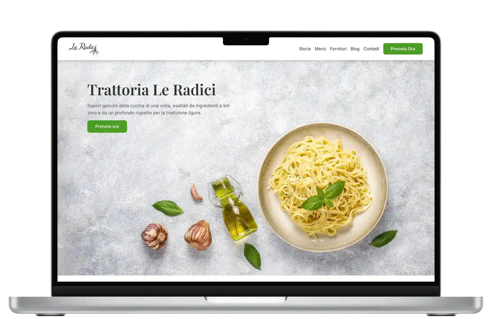
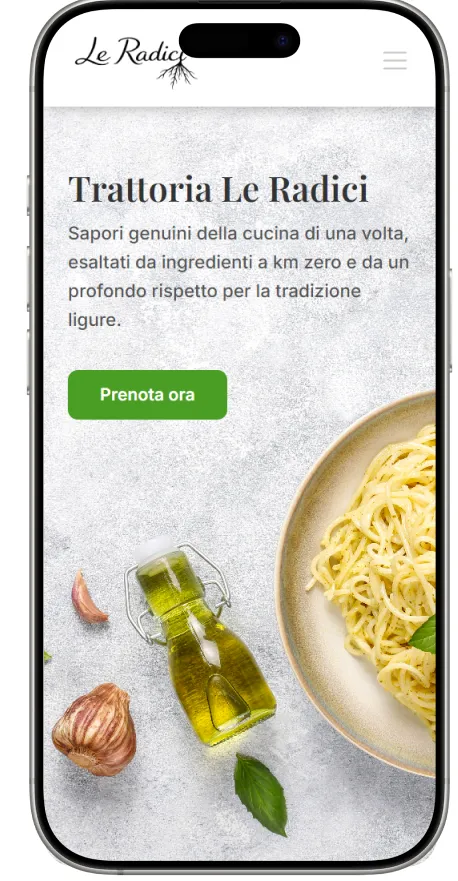

Cosa ho progettato
Ho progettato da zero il sito web per una trattoria di fantasia in due versioni uguali, ma utilizzando da una parte Wordpress, mentre per la seconda versione HTML5, CSS, JS e BOOTSTRAP. L'obiettivo principale è stato verificare i limiti e i vantaggi dell'utilizzo di due teconologie differenti: Bootstrap permette di personalizzare in maniera migliore il sito, mentre Wordpress consente di costruire il sito in modo molto intuitivo. Mi sono focalizzata sul processo di prenotazione dei posti e ho ideato un'identità per la trattoria che ho messo in risalto tramite un layout minimale ed estetico.
Come l'ho realizzato
Il flusso di lavoro si è diviso in due macrofasi. La prima ha riguardato lo studio della brand identity, dei competitor e la stesura di sketch su carta e wireframe digitali del sito. Nella seconda fase, ho sviluppato su Wordpress il sito, utilizzando Elementor. Una volta ultimata la versione su Wordpress, ho ricreato lo stesso risultato attraverso Bootstrap.
Il Risultato finale
Il risultato finale è un'esperienza web responsive con un sistema di prenotazione dei posti con una navigazione ottimizzata per smartphone e desktop. Ho realizzato dei mockup per far visualizzare il progetto al suo termine.

Visualizzazione Desktop

Ottimizzazione Mobile-First